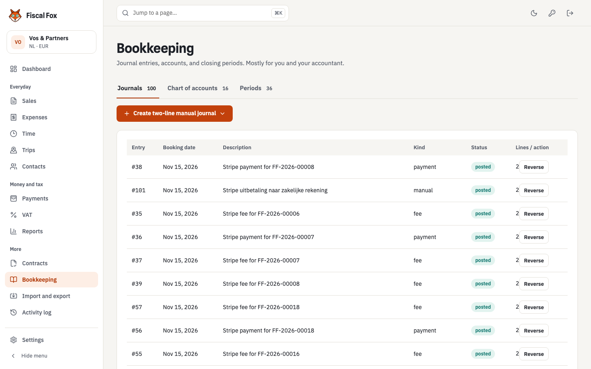

Bookkeeping
Bookkeeping shows the ledger behind everything else: journal entries, the chart of accounts, and fiscal periods. Most of it fills itself as you finalize invoices, approve expenses, and receive payments. It is mostly for you and your accountant.

Journals
The Journals tab lists every journal entry with its booking date, description, kind (such as invoice, expense, payment, fee, or manual), status, and number of lines.
Post a manual journal
- Open Create two-line manual journal.
- Enter the Booking date, Document date, and Description.
- Choose the Debit account and Credit account and enter the Amount.
- Select Post journal.
Correct a posted entry
Posted entries are never edited or deleted. Select Reverse, enter the Reversal date and a Reason, and select Reverse entry. Fiscal Fox posts a new entry with the opposite amounts on that date, so the history stays complete.
Chart of accounts
The Chart of accounts tab lists each account's code, name, type, and normal balance. New organizations start with a compact Dutch chart aligned with RGS.
Periods
The Periods tab lists the monthly fiscal periods and their status:
- Open: entries can be posted.
- Soft locked or Locked: nothing can be posted in the period, for example once its VAT return is filed.
Accountants can only soft-lock a period. Owners and admins can set any status, including reopening a period. The Lock evidence column shows when a period was locked, or Open for posting.
Who can do this
Everyone can read the ledger. Owners, admins, and accountants post and reverse journals and change period status. See Roles and the accounting rules.